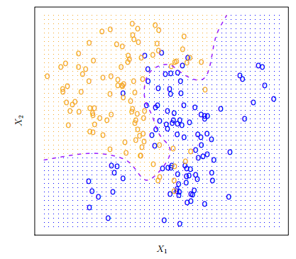
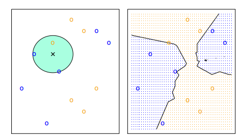
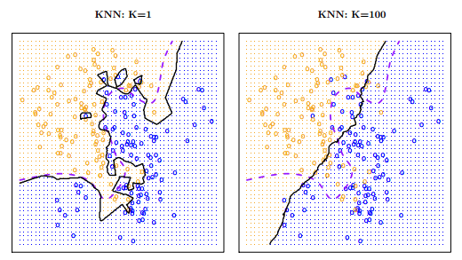

Supervised Learning I
Introduction
What is Machine Learning?
Machine learning is a subfield of artificial intelligence (AI) that involves the development of algorithms and models that enable computer systems to automatically learn from data without being explicitly programmed. The goal of machine learning is to develop systems that can identify patterns, make predictions or decisions, and improve their performance over time through experience. In other words, it’s a way of making a computer “learn” a set of rules and patterns from data. There are different kinds of problems we can approach and resolve with machine learning:
Predict whether a patient, hospitalized due to a heart attack, could have a second heart attack. The prediction can be based on demographic, diet and clinical measurements for that patient.
Predict the price of a stock in 6 months from now, on the basis of company performance measures and economic data.
Identify handwritten numbers and words in a picture.
Predict salary based on demographic and labor variables.
Classify texts according to the sentiments they express (positive or negative).
The challenges we mentioned so far belong to the subgroup of supervised learning machine learning tools. We call it supervised because it is characterized by training algorithms on labeled datasets. In a labeled dataset, each input data point is paired with its corresponding correct output. Throughout the training process, the algorithm acquires an understanding of the relationship between the input data and the desired output. The objective of supervised learning is to assimilate a mapping from input data to output labels. This enables the algorithm, when faced with novel, unseen data, to predict the accurate output by leveraging the learned patterns derived from the training dataset.
Variables in supervised learning problems can be classified as input features (also called X, predictors, features) which will be used to predict an output variable (also called Y, response or dependent variable).
While predicting specific outcomes is a powerful result that can come from machine learning methods, it is not the sole focus. We may also aim to understand the relationship between features and the response variable. This involves identifying crucial predictors among a vast array of variables, discerning the relationship between the response variable and each predictor, and elucidating the form that relationship takes.
Depending on the type of variable Y, supervised learning problems can be divided into two subgroups:
Classification problems: This occurs when Y is categorical (for example, when predicting the employment status of a person). The response provides the probability that the observation belongs to a particular class.
Regression problems: This arises when Y is numerical (for example, when predicting the salary of a person). The response predicts a quantity.
We assume there is some relationship between our predictors and the response variable, which can be written in the general form:
\[ Y = f(X)+ ϵ \]
Where \(f\) is a function that represents the systematic information that \(X\) provides about \(Y\), and \(ϵ\) is a random error term. This function is generally unknown, and one must estimate it based on the observed points. Machine learning can be thought as a set of approaches to estimate \(f\). In a way, we can think of these methods as a sophistication of linear and logistic regressions, since we can model complex, nonlinear relationships between the predictors and the outcome.
For this class, we will go over two types of supervised learning models: Naive Bayes and K-Nearest Neighbors. These can be classified as two different kinds of algorithms: parametric and non-parametric.
Parametric methods make assumptions about the functional form of \(f\), and then proceed to fit the data to this function in order to estimate its parameters. Such an approach simplifies the task of estimating \(f\), as it’s generally more manageable to estimate a set of parameters than it is to fit an entirely arbitrary function. However, as previously mentioned, the true form of \(f\) is typically unknown. Consequently, the primary challenge lies in the potential mismatch between the assumed shape of \(f\) and the actual distribution of the data. This issue can be mitigated by opting for more flexible models capable of accommodating various potential functional forms for \(f\). Nonetheless, a trade-off exists, as excessively flexible models may lead to overfitting.
On the other hand, non-parametric methods don’t make assumptions regarding the real shape of \(f\). Instead, they seeks an estimate of \(f\) that gets as close to the data points as possible. This resolves the problems related to assuming a particular form of \(f\) that might not fit our data. However, since they do not reduce the problem of estimating \(f\) to a small number of parameters, they require a large number of observations to obtain an accurate estimate.
Naive Bayes
Naive Bayes is a probabilistic machine learning algorithm used for classification tasks. It’s based on Bayes’ theorem, which is a fundamental theorem in probability theory. Naive Bayes assumes that all features are independent of each other given the class label. Despite this simplifying assumption (which is often unrealistic), Naive Bayes classifiers can perform remarkably well in practice, especially when working with high-dimensional datasets.
Bayes’ Theorem1 describes the probability of an event, given prior knowledge of conditions related to the event. In the context of classification, Bayes’ theorem allows us to calculate the probability of a class label given a set of features.
\[ P(y/X) = (P(X/y) P(y)) / P(X) \]
Bayes classifiers straightforwardly assign an observation to the class with the highest probability. In a binary classification problem where there are only two possible response values, the Bayes classifier corresponds to predicting class one if \(Pr(Y = 1|X = x0) > 0.5\), and class two otherwise. This seems very simple… in theory. If we understand how the data was generated, we can calculate the conditional probabilities for each value of \(X\) and estimate the Bayes decision boundary.
![The Bayes Decision Boundary is the boundary that separates the feature space into regions corresponding to different classes. It is determined based on the posterior probabilities calculated using Bayes’ theorem. It will define Bayes classifiers’ prediction: an observation that falls on the orange side of the boundary will be assigned to the orange class, and similarly an observation on the blue side of the boundary will be assigned to the blue class.

In real-world scenarios, we typically lack knowledge of the probability distribution of \(Y\) given \(x\). Frequently, we work with datasets whose construction process is unknown, and we contend with numerous predictors that may exhibit interactions. Consequently, the Bayes Classifier is not a practical algorithm for direct application. Instead, it serves as an ‘ideal’ tool utilized in constructing models when the true conditional probability distribution of the data is unknown, as is the case with Naive Bayes.
This is a widely used technique for classification tasks, particularly valuable in scenarios with high dimensionality problems (i.e., a large number of predictors). Apart from being rooted in the Bayes classifier, it relies on a single assumption: within each class, the predictors are independent. In other words, the presence of a particular feature does not influence the presence of others, hence the “naive” aspect of the model. This assumption is pivotal as it addresses the challenge of estimating probability distributions for each class with potentially correlated predictors. By assuming independence among predictors within each class, we essentially assume the absence of association. Mathematically, this can be expressed as:
\[ fk(x) = fk_{1}(x_{1}) × fk_{2}(x_{2}) × · · · × fk_{p}(x_{p}) \]
With this assumption, one can incorporate the probability distributions \(fk(x)\) into the Bayes theorem, deriving an expression for the probability of the \(k\)th class and making predictions accordingly. As the model learns the relationship between X and Y, it computes probabilities for each class. When making predictions, it allocates a specific class to each new observation based on the calculated probabilities.
The Naive Bayes classifier boasts several advantages. Leveraging the assumption of independence between variables, it emerges as a notably simple and efficient algorithm compared to others. Additionally, it demonstrates exceptional performance with high-dimensional data. However, this simplicity comes at a cost. The naive assumption of independence renders the model sensitive to outliers, limits its ability to capture intricate relationships, and introduces a degree of bias into our modeling approach.
K-Nearest Neighbors
The main idea of KNN is that we want to estimate the conditional probability each observation has of belonging to the \(k\)th class based on the class of its ‘nearest neighbors’. We want to define a numeric value \(K\) that will be the number of neighbors used to compute the probability. The algorithm will proceed to identify which are the points closest to each observation with the euclidean distance: the measure of the true straight line distance between two points in Euclidean space2. The model stores all the training data points along with their corresponding class labels.
For a given new data point, KNN calculates the distance between that point and all other points in the training data.
The model computes the distances between the new data point and the original data points. It selects the k data points with the smallest distances to the new data point. These are the k-nearest neighbors. Then, it performs majority voting: it count the occurrences of each class among the k-nearest neighbors. The predicted class for the new data point is the one that appears most frequently (has the majority).

It is important to have in mind that the choice of \(K\) can change a lot the results of our models. The lower the number, the more flexible our model is. This means it will have more variance and could tend to overfit our data. On the other hand, as \(K\) grows, the method will be less flexible and will tend to a linear decision boundary.

There is no way of knowing beforehand which will be the ideal number of \(K\) for our dataset. Depending on the kind of problem we want to address, this will be a methodological decision that we will have to make based on various methods for estimating error rates in machine learning models.
KNN offers several advantages. To begin with, it stands out as a straightforward and user-friendly model, making it particularly accessible for beginners. Additionally, it excels in capturing intricate decision boundaries and proves effective in handling nonlinear datasets. Another notable strength is its ability to adapt to various data types, as it does not assume a specific underlying data distribution. Despite these merits, KNN has its share of drawbacks. Notably, the method involves calculating distances between the new data point and all training data points, rendering it computationally demanding for large datasets or those with high-dimensional feature spaces. Furthermore, KNN treats all features equally, potentially leading to suboptimal performance when faced with irrelevant features or data noise. Moreover, the model is unsuitable for handling high-dimensional data due to the challenges posed by the curse of dimensionality.
Discussion
Supervised learning methods are a powerful tool to make predictions and understand certain dynamics of real-life problems. It can also simplify different tasks which could take a lot of time and manpower to solve, like manually detecting risk of heart attacks in patients. While this is something exciting and one can think of many possible cases of use for these methods one should be careful regarding the ethical dimension of this. The data extracted and used in these methods is not a set of abstract numbers: in many cases, it’s information about real-life people, their bodies, their thoughts and their relationships. This brings up the question: what are the ethical precautions one person (or one company) should have when working with data?
(D’Ignazio and Klein n.d.) approach this topic with a concrete example. A few years ago, a data scientist working at Target made a machine learning model that could predict if a customer was pregnant based on their purchasing histories with the timeline of those purchases. The algorithm had a great performance in metrics: it could not only identify pregnant customers, but also predict their due dates. Target proceeded to put this algorithm into action sending discount coupons to pregnant customers. In terms of marketing, it seemed like a good idea. In ethical terms… not. A discount coupon for maternity clothes was sent to the house of a teenager in Minneapolis, and the one who received and saw them was her father. Target only lost a potential customer, but the young girl lost something worse: her privacy over information related to her own body and health.
Another ethical dimension we should take into account when working with machine learning methods is the (implicit or explicit) bias they can have. A common supervised learning case of use is the prediction of possible credit card default in order to give out loans in banks. In these cases, the variable “race” can be determining in the final output. While we can try to erase this variable from the model in order to remove the explicit racial bias of this model, we are not controlling the implicit bias. We will look into an example of this case in the guided practice.
References
Footnotes
Bayes’ Theorem states that the conditional probability of an event, based on the occurrence of another event, is equal to the likelihood of the second event given the first event multiplied by the probability of the first event. It is a mathematical formula for determining the conditional probability of an event.↩︎
There are many other ways to measure distances between observations in different dimensions: Manhattan, Minkowski, Chebychev distance, Cosine Similarity or Hamming are a few of them.↩︎